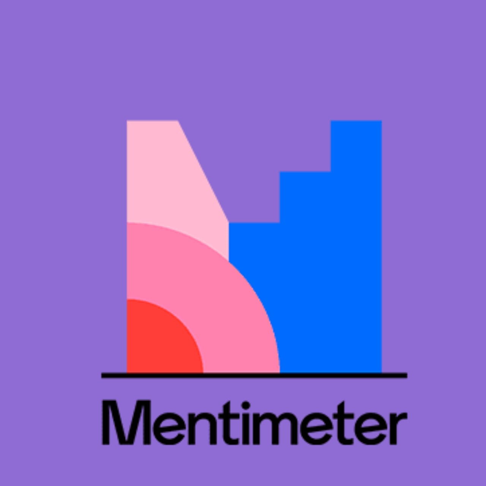
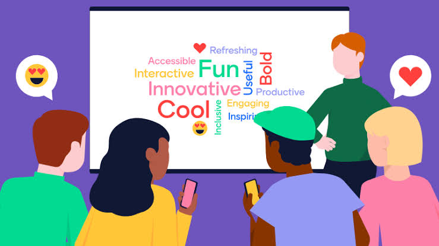
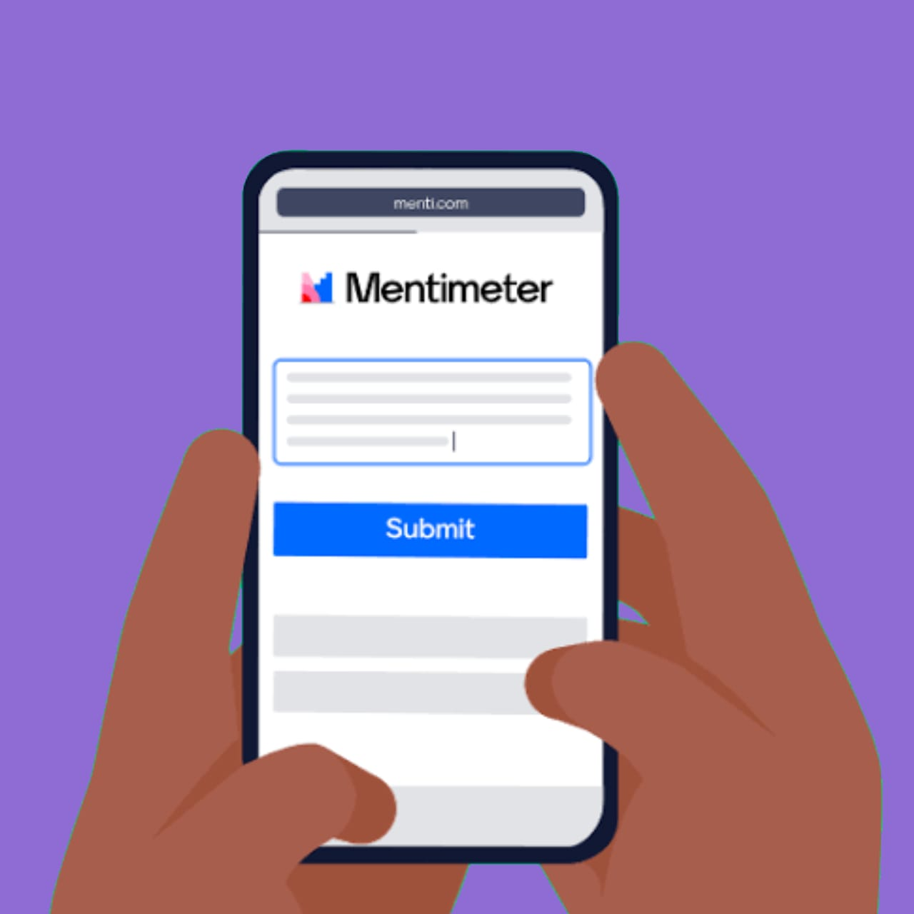
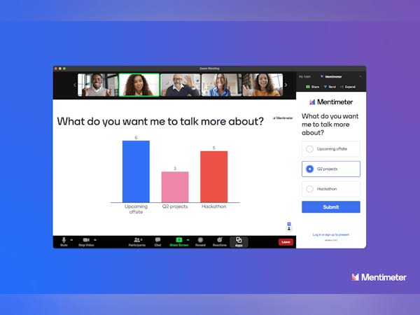

˗ˏˋ ¿Qué es Mentimeter? ˎˊ˗
(ㅅ´ ˘ `) Herramienta de presentacion interactiva que permite crear y compartir presentaciones en vivo, encuestas y cuestionarios en linea con respuestas en vivo.
˗ˏˋ ¿Para qué sirve? ˎˊ˗
ദ്ദി(ᵔᗜᵔ) Crear presentaciones interactivas, realizar encuestas en vivo, recopilar opiniones y retroalimentacion, aumentar la participacion y la interacion en eventos y clases.

˗ˏˋ ¿Cómo lo puedo utilizar? ˎˊ˗
(ㅅ´ ˘ `) 1.creando una cuenta y accede a la plataforma 2.elige un tipo de presentacion o encuesta 3.personaliza con preguntas y opciones 4.comparte el codigo o enlace con la audiencia 5.la audiencia responde en tiempo real 6.visualiza los resultados en graficos y tablas

˗ˏˋ ¿Quién lo creó? ˎˊ˗
ദ്ദി(ᵔᗜᵔ) Johnny Warstrom y la empresa se fundo en 2014 en estocolmo, suecia.
˗ˏˋ ¿Cómo ha ayudado a la comunidad digital? ˎˊ˗
(ㅅ´ ˘ `) facilitando la interacion y participaciones y eventos en publico, mejorando la recopilacion de retroalimentacion y opiniones en tiempo real formentando la colaborcion y el compromiso en entornos educativos.
˗ˏˋ ¿Qué la diferencia de las demás aplicaciones? ˎˊ˗
ദ്ദി(ᵔᗜᵔ) interaccion en tiempo real con la audicencia, encuestas y preguntas dinamicas, visualizacion instantaneas de resultados aparte de ser facil de usar y compartir

← Volver a la página principal